| 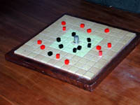 Breakthru maison
|
Breakthru Breakthru est
un interessant jeu de stratégie de la collection 3M bookshelf.
J'ai découvert ce jeu durant mes études supérieures,
probablement au moment de sa commercialisation. Le jeu de 3M est
élégant avec ses pièces de divers métaux.
Mais c'était bien trop cher pour moi à l'époque -
environ 50 $ si j'ai bonne mémoire. J'ai donc fabriqué
mon propre jeu en bois, avec des tuiles de céramique, des
armées récupérées d'un Risk et aussi un dé
à coudre.
|
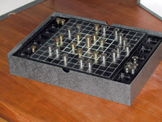 Breakthru par 3M
|
| 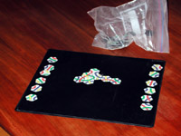 Tantrix magnétique
|
Tantrix est un jeu de tuiles, sans plateau, présenté
dans un sac. Pratique à transporter mais pas à jouer
sur une surface inférieure à une table. En particulier,
on ne peut pas y jouer en avion. J'ai réalisé une version
magnétique, à partir d'une photo des tuiles retravaillée
sur Photoshop et imprimées sur un papier photo brillant. Les
tuiles ont été collées sur une plaque magnétique
pour réfrigérateur et découpées. Le plateau
est une couverture dans laquelle on a glissé une plaque de métal. |
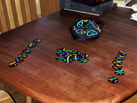 Tantrix standard
|
| 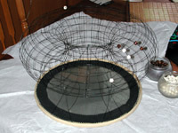 Plateau de Go torique
|
Le
Go est l'un des jeux les plus anciens, pratiqué depuis environ 4000
ans. Malgré sa longue histoire, on peut encore en imaginer de nouvelles
variantes. A gauche, vous voyez un plateau "standard" 19x19 réalisé
par Ken Clements, sur un tore. Chaque intersection est soudée
et les pierres, des perles, peuvent y être déposées. Une
solution parfaite pour ceux qui n'ont pas le temps d'étudier les
problèmes de Joseki. |
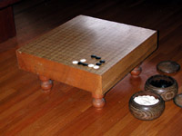 Plateau de Go standard
|
| 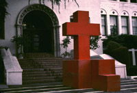 Soma Cube "Altar" maison
|
Le
Soma cube est un élégant casse-tête 3D, consitué
de 7 pièces pouvant être assemblées en un cube ou un
grand nombre d'autres formes. LA version commerciale présente
de pietites pièces ce plastique. Pour certains, ce n'est pas
assez gros. LA version présentée à gauche est
constituée de plaques d'acier soudées. Un "petit"
cube présente une arête d'environ 60 cm. Ce Soma Cube
géant a été réalisé par le professeur
de théatre Thurston James devant l'Immaculate Heart College, ca 1972.
Son installation n'avait pas été prévue par le conseil
d'administration. |
|
| 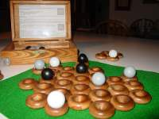 Zertz maison
|
Zèrtz |
|
| 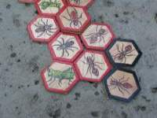 Hive maison
|
Hive Très éloigné de Zèrtz
dans la difficulté de réalisation, Hive nécessite
beaucoup d'efforts.Mathew Marquand (sur BGG) y a consacré beaucoup
de temps en gravure et peinture sur bois.
|
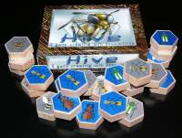 Hive standard (1e édition)
|
| 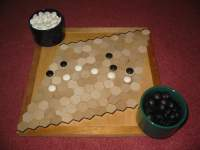 Hex maison
|
Hex Il est rare de trouver une version commerciale
de Hex, mais des hexagones de divers matières sont très
fréquents. Des pierres de Go font simplement les pions.
|
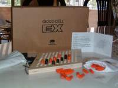 Hex commercial
|
| 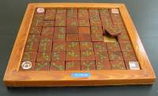 Trippples maison
|
Trippples est un jeu intéressant en raison de ses pièces directionnelles
(toutes les directions possibles à partir de 3 flèches) et
des règles astucieuses : les directions dans lesquelles vous pouvez
bouger sont indiquées sous les pièces adverses. La
version standard est une réalisation en plastique bien peu inspirée. Des
versions en bois existent mais celle de Derek H. Hunt est qualitativement
loin devant les versions commerciales. |
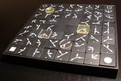 standard Trippples
|
| 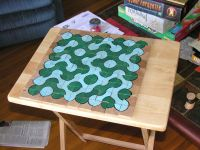 |
Truchet Les tuiles de Truchet présentent unschéma
simple permettant de paver le plan, créant un paysage de rivières
et collines. Comme dans le jeu implémenté ici,
les tuies sont réversibles, reconfigurant le paysage au cours du
jeu.
|
Aucun plateau commercial |
| Envoyrz vous contributions à cette
page Courriel : |
Aller à la Page d'accueil de BoardSpace.net |
{kind=link}
{kind=link}
{kind=link}
{kind=link}
{kind=link}
{kind=link}
{kind=link}
{kind=link}
{kind=link}
{kind=link}
{kind=link}
{kind=link}
{kind=link}
{kind=link}
{kind=link}
{kind=link}